2023-09-17 08:25:00
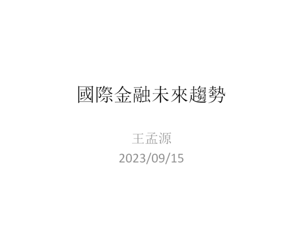
原本在09/15為北市大演講寫下1.0版；下面刊出的内涵是10/06在成大所用的1.1版。
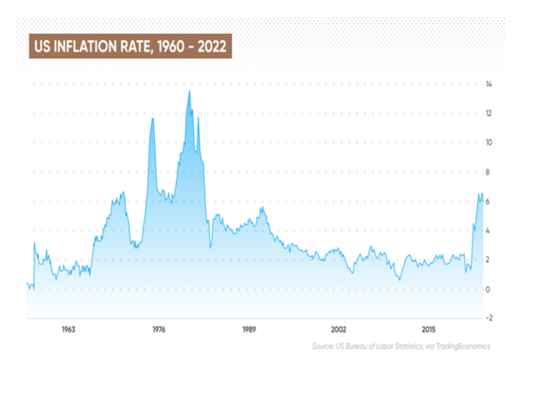
圖中1960年代後期的山峰，對應著越戰引發的赤字，連帶著導致1971年Nixon打破Bretton Woods體系，為美元強奪了國際儲備貨幣本位的地位（原本美元必須錨定於黃金，參見前文《美元的金融霸權（一）》）。其他工業國家，在美國官方“The dollar is our currency, but your problem“的無賴態度之下，只好跟著無限印鈔，為全球通脹醖釀了肥沃的土壤。
1970年上任的美聯儲主席Arthur Burns，爲了避免緊縮銀根會引發經濟衰退的政治責任，選擇和稀泥（亦即只升息到勉强能彌補通脹率的程度；當前的Powell也做了同樣的選擇），靜待外來的經貿環境變動代爲解決通脹。然而他運氣不好，撞上了能源危機，國内的强勢工會又很快將通脹固化並加强，價格和工資開始滾雪球式的指數上升，於是Burns黯然下臺，換上强硬的Volcker（期間有一位短命的Miller，但沒有留下值得討論的政績），後者隨即將真實利率（亦即利率超過通脹率的部分）調升到6%，故意製造了20世紀後半美國最嚴重的經濟衰退，並且在幕後默許支持產業外移新潮流以削弱工會勢力，於是成功打破滯漲的惡性循環，將通脹率壓囘4%左右。
1990年代，美國同時收割蘇聯和日本兩個巨人的尸體，經濟得以享受魚與熊掌兼得的狂歡，連通脹率都進一步壓縮到2%以下。進入21世紀之後，美國連續出兵阿富汗和伊拉克，財政赤字再度膨脹，但受益於中國勞工所提供的廉價工業品和幾任人民銀行行長的犧牲奉獻，反而經歷了20年的通縮”問題“，於是不斷要求人民幣升值，直到新冠和俄烏戰爭終於複製了50多年前越戰的經濟效應，通脹爆發，反轉過來需要人民幣貶值；雖然因爲“中國惡性壓低匯率”的話聲還在回蕩，不能公開要求，人民銀行卻極爲體貼地揣摩上意，積極主動地維護了美國的利益。
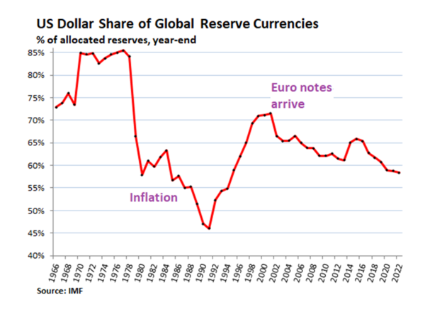
國際貨幣的主要用途，有貿易支付、大宗商品定價、和資產儲備三項；其中資產儲備所代表的”Exorbitant Privilege“（”離譜的特權“，1960年代法國財政部長Valéry Giscard dEstaing對美元的評論，參見《Wikipedia》；請注意，當時美元甚至還沒有擺脫對黃金的錨定）最大，大宗商品定價習慣最難改，只有貿易支付可以簡單獨力做出變革，例如過去兩年的俄國盧布。然而中國人民銀行即使在2017年美國公開挑起貿易戰之後，依然展現了無比的”戰略定力“，對上峰意圖陽奉陰違、敷衍了事。
正因爲儲備比率是國際貨幣地位的最重要指標，所以上圖值得詳細分析。首先，1971年打破Bretton Woods之後，黃金的儲備價值被美元完全替代，所以後者的占比不降反升，從75%上升到85%的歷史高點；這個主宰性的地位，一直持續到1980年Volcker所製造的衰退，然後歐洲國家和日本的中央銀行花了其後的十年想方設法將貨幣儲備多樣化，於是美元份額一路直瀉到46%的歷史低點。
1990年不但是美國收割地緣戰略對手的盛宴起點，也是美國完成全球獨霸、唯我獨尊的轉捩點，其後”盟友“的政治脊椎骨被逐一打斷，只有歐元的誕生在2002年之後分流了部分儲備貨幣份額。到2022年時歐元的20+%占比，和美元加起來，與1970年代美元的85%相比基本一致，反映了第三世界（尤其是中國）在金融和貨幣方面的無所作爲。
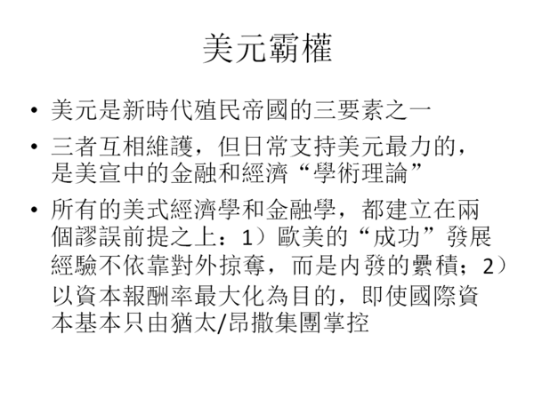
事實上，中國是500年來第一個完全依賴内部纍積而興起的主要經濟體，而美國這類殖民霸主不但依靠種族滅絕和對外搜刮崛起，幾百年近代歷史基本就是在不斷改進搜括的隱蔽性（美宣）和效率（美元），這種隱蔽而高效的搜刮就是當前“基於規則的全球秩序”的真諦。
只對投資報酬率做最大化，是資本主義的核心定義，也是自由市場不斷加劇貧富不均的基本原因，參見前文《社會主義國家應該如何管理資本》。
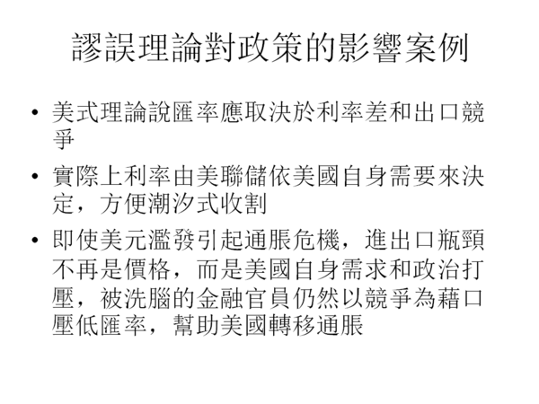
即使100%只看美式理論，也充滿著自相矛盾。例如在匯率問題上，出口競爭力對比指向人民幣的大幅升值；就在幾年前，美方宣傳口徑所口誅筆伐的，還是“中方操弄壓低匯率”。現在中美貿易逆差更大了，中國的產業升級也更進一步（參考汽車出口），爲什麽美方的理論要求卻忽然顛倒過來？差別就在於當時美國經歷通縮，而現在則擔心通脹。換句話説，人民銀行主管所遵循的指導原則，並不真是美式經濟理論，而是美國經濟利益；前者只是糊弄上峰的藉口。
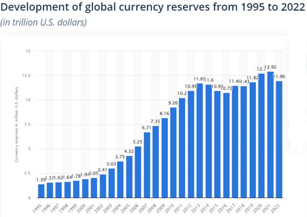
”潮汐式收割“是”Exorbitant privilege“的重要手段之一，1997年亞洲貨幣危機是典型案例，參見前文《美元的金融霸权（二）》。請注意，因應1997年被收割的經驗，第三世界國家不得不在其後的15年，將外匯儲備提高了近一個數量級（直到2008年金融危機的經驗顯示第三世界外匯儲備已足以抵擋1997年式的收割，並迫使美國殖民資本修改收割方式），反而助長了美聯儲（聯合附庸國家）的統治性優勢。這是因爲國際儲備貨幣的地位，其本質是一個”囚徒困境“，被害者只有在大國領導下團結起來、共同堅決反抗，才有脫困的可能。而這個”團結“的前提，立刻排除了自私短視國家（如印度）深度參與的可能。
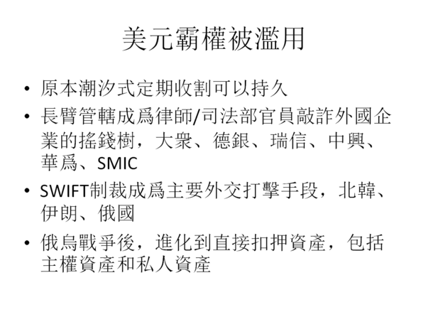
當代美國統治階級又吃又要的貪婪和短視，是中國有内部金融蛀蟲多年扯後腿之後，仍然享有大好國際局面的原因。
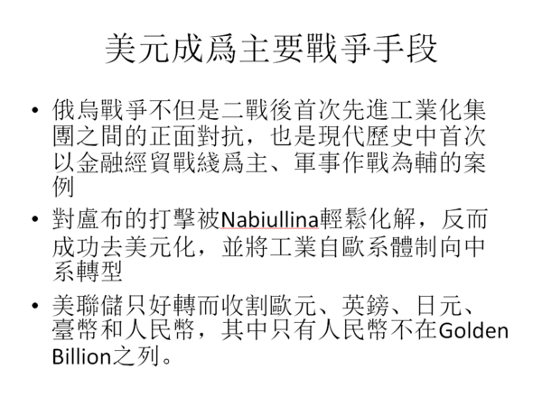
這一輪被收割的韭菜，原本是美國最大假想敵的中國反而做出了大約一半的貢獻，真乃世界奇觀。
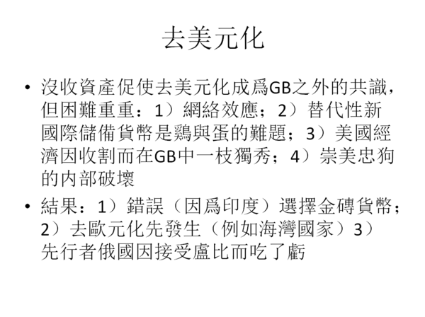
内心動機基本無法只憑觀察事實和邏輯推演來100%斷定，但在過去18個月要建立替代美元的新國際貨幣這件事上，中方兼有上峰的堅決意志支持、内參管道的正確分析和精準建議、以及主要夥伴俄國的徹底合作意願和高度專業能力，卻仍然一意走偏，選擇了讓印度和巴西兩個常年赤字國輕鬆攔截的道路，任何理性的分析者都必須認真考慮這是内賊以進為退、間接破壞的可能性。
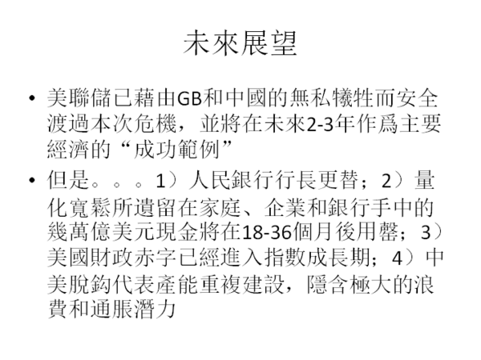
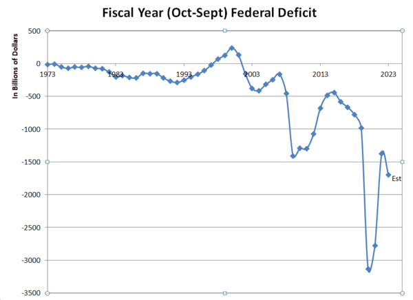
所以下一個經濟危機，應該在2025年到2030年之間發生，而其焦點很可能是長期利率與財政赤字的惡性循環作用。
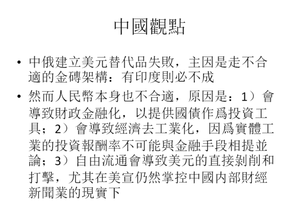
人民幣不適合全面替代美元（精確來説，不適合作爲金融性的國際儲備貨幣，但在支付和定價上可以盡力替代），原本是博客早年就多次解釋過的簡單事實，但内賊除了用金磚來敷衍阻撓之外，人民幣”國際化“也是常見的倒行逆施藉口，例如建立金融自貿區和開放美國投資銀行，都是以此做為矇騙上峰的説辭。
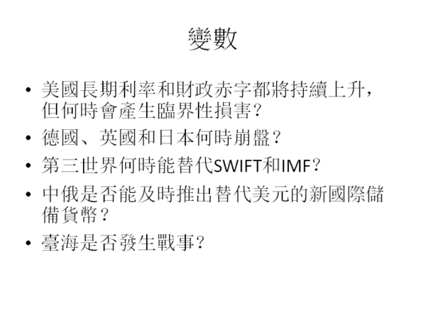
這些變數固然無法事先精確預測或掌控，它們對中方和全人類的影響好壞和大小卻取決於新任金融主管的能力和品德。而輿論雖然力量很小，但依舊是體制外知識份子做貢獻的唯一手段，所以我鼓勵大家努力傳播正確認知，或許能有一點糾偏的壓力。
【後註一，2023/09/16】在北市大給這場演講的問答階段，有聽衆推薦一篇論文（參見《TALENT VERSUS LUCK: THE ROLE OF RANDOMNESSIN SUCCESS AND FAILURE》），模擬人生成敗機制，發現成功三要素之中，除去明顯主導的資本/資源之外，運氣遠遠比能力（根據研究設計，是很廣義的能力，含人際關係/情商等等）重要得多。這不但符合我多年來的觀察（尤其在商場），也是社會主義國家必須强力扶貧並多方照顧弱勢群體的主因之一，特別在基礎教育和人才選拔上責無旁貸。
【後註二，2023/09/18】我剛注意到本月BHP和T-Mobile各自先後發行了數十億美元的新長期債券。照理說，10-年長期國債的利率已經從三年前的0.57%爬升到現在的4.30%（參見下圖），而基本所有大企業都在過去四年以近零利率拼命貸款，現金仍有大量剩餘，因此唯一在此環境下繼續大幅借貸的考慮，只能是預期長期利率還會爬升，並且在可見的未來不會回跌。BHP和T-Mobile的CFO顯然與我所見略同（雖然他們慢了幾拍），但總會有不少傻乎乎的企業高層看不清金融大局趨勢，幾年之後，他們就將是新一批的Silicon Valley Bank。
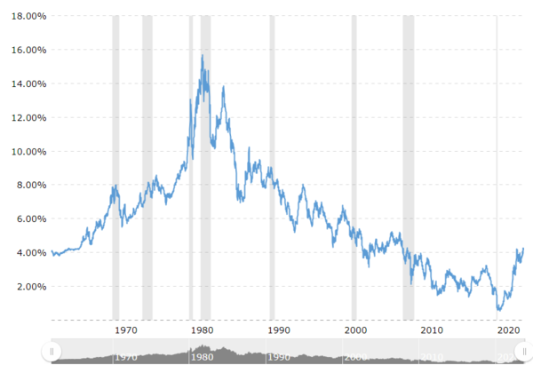
【後註三，2023/09/18】因爲美式MBA教育所帶來的商界文化腐朽，是消滅生產效率、推高貧富不均的重要推手，我在上周的訪談節目（參見《龍行天下》）中開了玩笑，說他們是現代社會的最大毀滅力量之一，甚至可怕過戰略核武。
於是有讀者和我分享了一篇論文（參見《Eclipse of rent-sharing: The effects of managers business education》），針對美國和丹麥商業主管接受MBA教育後的實際表現做了詳細統計分析，發現他們不但不增加產品銷量，連對利潤都沒有絲毫貢獻，唯一可以測量到的差異，在於他們大幅改變了薪資結構：削減底層而圖利高層。論文作者進一步確定，支付這些薪資的資金來自公司舊有的生意傳承，和他們的“管理”毫無關係。
總結來説，資本主義體制是圖利大資本的設計，而商學院教育在其中所扮演的角色，在於通過誘惑鼓勵經理階級參與分贓，來為掠奪勞工生產價值做普及和掩飾；這些MBA別説對國家社會，就是對公司和商場也是毫無正面價值的毒藥，有興趣深究的讀者可以參考聯想的案例。
【後註四，2023/09/19】上周我的演講、訪談和博文中毫無保留地批評了人民銀行的貨幣政策之後，難免出現洗地的聲浪，其内容當然是利用各種狡辯術；其中最普遍的，當然又是扭曲論點、另外樹靶，例如“央行不是決策單位”。這其實是非常可笑的蠢話，因爲我在訪談和博客的無數相關討論，都明確把負責決策的上峰和作爲專業幕僚的央行分開來談。至於“東方文化”的“戰略定力”不想對美挑釁，那麽楊潔篪在最應該敷衍的外交場合說出“我們把你們想得太好了”如何解釋？更別提“一帶一路”早就直接砍斷殖民霸主以技術、資金、產能控制殖民地的手段，我只不過討論如何彌補治標不治本（“本”自然是美軍、美元、美宣這霸權三要素）的漏洞罷了。所以這些睜著眼睛説瞎話的人，正是我所説的無資格在公共論壇發言的噪音製造者。
不過真正值得深究的，其實是最高段的“語義歧義”伎倆（參見《常見的狡辯術》正文倒數第三段的討論），在此再做一次澄清：我不但熱烈支持，而且一再倡議人民幣積極取代美元的國際貿易支付和商品定價功能，事實上博客曾反復批評中國金融主管在這兩個任務上消極怠工，以致成果寥寥、乏善可陳。然而要用人民幣直接替代美元的金融儲備地位，不但是癡人説夢，而且有害無益；而金融官員卻熱衷以此作爲對國際金融巨鰐撤防的藉口，真正是無可辯解的引狼入室行爲，其用心之歹毒、危害之深遠，罄竹難書。
【後註五，2024/04/02】下圖是美國國債利息支出與稅收的比值歷史，目前剛升至35%左右，大約相當於1980年代初期的數值。然而當時美聯儲的貼現利率曾高達20%，而目前才只有5%出頭，Powell卻已經可以無視通脹壓力，承諾將在本年度降息三次。這是因爲雖然利息支出繼續上升並無來自自由市場和貨幣理論的阻力，美國國家財務卻另有一個真正的安全護欄，亦即美聯儲對外國中央銀行（主要是中國和歐盟，日本和英國的體量則小一個層次）貨幣政策的全面掌控。換句話説，Powell認爲，來自歐盟和中國的金融利益回饋，完全足以保障滯漲不會發生，並且將部分消弭聯邦政府透支預算以維繫經濟活力的急迫性。
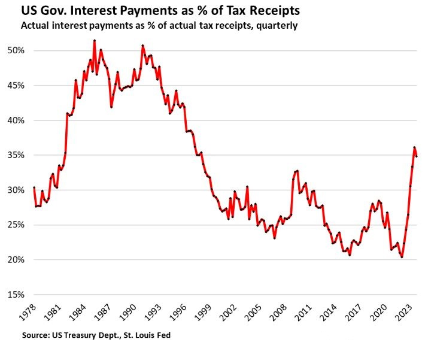
要更深入地來理解，我們必須回顧歷史：歐洲經濟共同體（EEC，歐盟的前身）在Nixon打破Bretton Woods體系中的美元對黃金錨定之後一年，公開發表並決議采納《Werner Report》，準備將諸國貨幣改爲互相錨定，實質上是將錨定的對象從美元轉爲德國馬克；這個努力在1979年修成正果，European Monetary System（EMS，歐洲貨幣體系，歐元的前身，1992年Soros狙擊的實際目標，其後在1999年南斯拉夫戰爭又被挫折一次，希臘金融危機之後其前景終於被封頂，2022年俄烏戰爭後反過來成爲美元附庸）正式成立，正文那張《US Dollar Share of Global Reserve Currencies》圖中所示的，1980年後美元佔國際外匯儲備份額出現斷崖式下降無可避免，對美國國内通脹的正反饋海嘯迫在眉睫，所以Volcker不得不打破一切慣例、不顧政治代價，有意地製造了一場極爲痛苦的嚴重經濟衰退，一切只爲遏制通脹。相對的，過去幾年，人民銀行明知人民幣不能也不應該自由兌換，完全不可能一步取代美元，卻無視自我國家利益和國際夥伴的犧牲，攪黃了對應著當年EMS的新國際貨幣，從而消滅了人民幣循馬克前例、間接主導國際外匯儲備的通道，以致當前的美聯儲游刃有餘、毫無壓力，可以繼續刺激國内經濟，重新吹大金融泡沫，肆意對外吸血收割。總之，在試圖推翻昂撒殖民體系的鬥爭中，中國金融貨幣主管對美方來説居功至偉。
【後註六，2024/06/11】一年前我曾重點指出美國國内工廠建設投資有了爆發性的成長，反映了美方刻意將中國剔出全球產業鏈之後，試圖逆轉產業外包的政治努力，這對應著3.0版的中美脫鈎計劃（1.0版由Obama間接婉轉地以自貿協定的形式提出，並不追求將產能轉回美國本土，以兼顧壓制通脹壓力，但其後Trump的2.0版就毫無顧忌，Biden的3.0版則變本加厲），而且仍在持續之中，參見下圖中的月度資料：
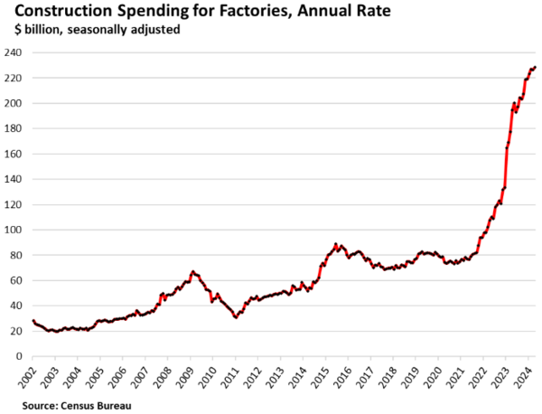
然而這些產能卻全屬技術密集以及資本密集的產業（例如半導體和化工），不但來自針對所謂“盟友”（亦即殖民體系的高層附庸Golden Billion中的歐洲和東亞）的搜刮，而且對美國國内就業率沒有幫助，反而受人才欠缺的影響而更加磕磕絆絆。下圖是實體產業就業數據，請與上圖做比較，特別注意廠房與人工曲綫的完全脫鈎（以及2017-2018年之間的些許就業成長，反映了Biden和Trump的Insourcing版本有不同的產業偏重，但這屬於戰術選擇上的差異，戰略層面並無差別）。
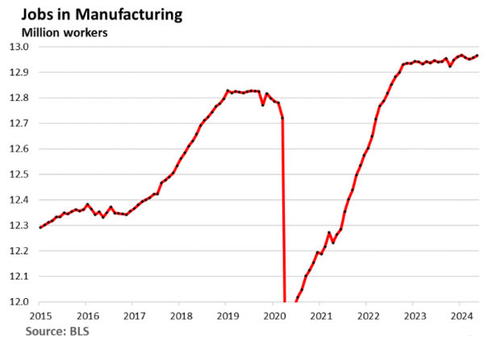
即使充分考慮新建廠房和雇傭工人之間的時間滯後效應，依舊可以從時間跨度更大的實體產業就業占比（參見下圖）簡單看出，這一波史無前例的殺鷄取卵，連恢復2000年代初的1700萬製造業雇員都遙不可及，更別提重回Reagan外包風潮之前的產業實力。
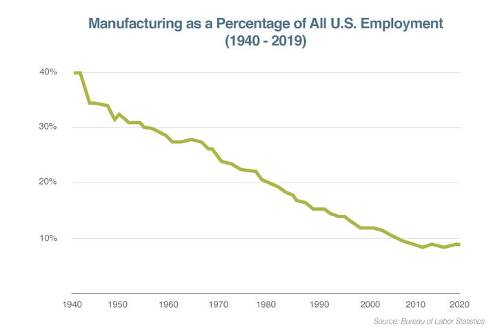
實體產業對現代國家有四個主要意義：1）整體國力的體現，從而作爲未來持續發展和成長的根基；2）人民生活水平的提升，尤其為底層民衆提供晉升中產的就業機會（讀者可以對比中國和印度），以遏制貧富不均；3）國家財政和企業利潤的來源，在這一方面實體經濟的效率，遠低於以金融手段對外掠奪，但後者的前提在於擁有並願意消耗全球霸權地位；4）戰爭潛力的基礎，包括熱戰和冷戰。前面幾個段落的論證，總結來說，就是美國這一波Insourcing是一次性的掠奪、無可持續，而且無助於底層就業，更不能取代金融獲利，反而是極度浪費的低效投資，所以即使成功獲得了所有計劃中的產能，也頂多只對第4項有明顯幫助，其中的冷戰圍堵尤其是Biden政權做出此戰略決策的核心考慮。
【後註七，2024/06/29】通脹危機需要三種要素：1）貨幣超發，這提供背景大環境；2）供給面問題，這是導火綫，例如1973年的能源危機和2020年的新冠疫情；3）價格滾雪球的機制，在1970年代是極度强大的工會，在過去三年則是工資回升和財團壟斷的提價權（Pricing power due to reduced competition）。前者有稍微緩解貧富不均的功效，但為美國實體產業的競爭力雪上加霜，博客已經反復討論過了。今天看到非金融業獲利的成長圖，印證後者，在此提供讀者參考，請特別注意2020年之後的爆炸式增長：
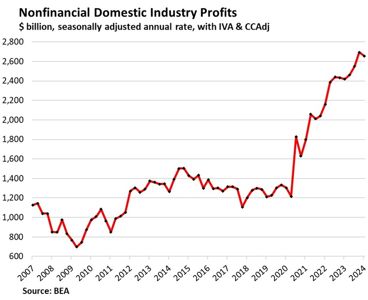
因有人民銀行和歐元銀行的無私犧牲奉獻，再加上這次的價格滾雪球機制弱於1970年代，美國已經徹底渡過這一波通脹危機，參見下圖中的藍綫（紅綫是滯後6個月的平均值）。這代表著在過去一年無數媒體上的“金融專家”胡亂猜測、反復橫跳之後，美聯儲終於真正獲得降息的自由：
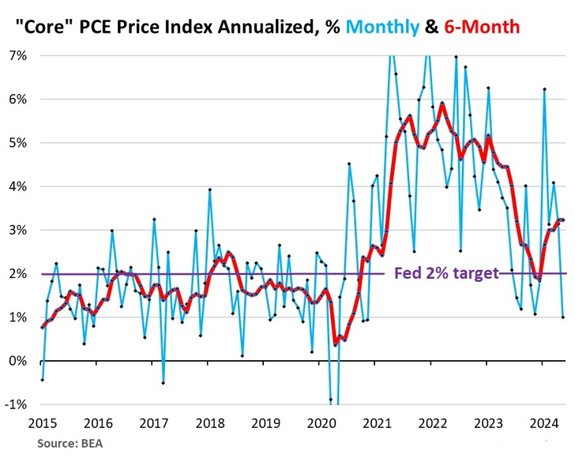
【後註八，2024/09/12】前面【後註六】所討論的美國新建廠房狂潮，幾乎全部來自東亞和歐洲的產能轉移，其中最大宗是半導體，包括臺積電和三星的新厰Fab；而三星又比臺積電更激進，計劃直接在美國上馬最先進的2納米生產綫，總投資高達250億美元，是這一波美國產能回歸的最大、最尖端項目，沒有之一。然而根據《Business Korea》報導（參見《Samsung Electronics Withdraws Personnel from Taylor Plant Amid 2nm Yield Issues》），因某種未被解釋的原因，三星在美的新廠良率始終遠低於20%，遠遠落後韓國本土，經過多次試圖改正未果，已經不得不放棄治療、選擇止損，將部分相關技術人員撤回韓國，顯然這個生產綫只能等本土先搞定尖端技術再做轉移；這反映了現代美國社會環境和人力資源不足以支持高科技工業的窘境。
【後註九，2025/03/25】美國在2021/2022通脹危機中，依靠歐盟和中國在貨幣政策上的自我犧牲，得以單憑加碼印鈔而脫困，於是不但失去正常經濟衰退應有的戳破金融泡沫、洗滌僵尸企業的作用，反而進一步刺激浪費，使Everything Bubble樣樣泡沫繼續吹大到史無前例的地步。這其中最基本最嚴重的泡沫當屬債務市場，但即使忽略私有經濟面的債務，所謂的政府債也不能只看財政賬目Fiscal side，名義上是私營企業卻主管國家貨幣政策Monetary policies的美聯儲，也在賬本中暗藏了極大的地雷。
這是因爲美聯儲作爲美元債務市場的超大鯨魚（Whale，華爾街術語，意義見下），享有極大的Trade Impact交易響應：在濶表階段（亦即下場購買資產）必然會大幅推動價格上升，於是自然能記錄不少利潤；但一旦轉爲縮表（脫手資產），市場價格當然也會被壓低，所以實際上的盈虧，必須完成一整個濶縮表來回、手頭資產基本清空，才能真正論斷。雖然美聯儲的買賣債券，任務純粹在於維持金融價位和經濟繁榮，自身的會計盈虧根本不在事先考慮之列，但完成縮表之後的净盈虧，其實也視其主任務的成敗而定：做爲Liquidity provider of the last resort最終的流動資金來源，美聯儲基本充當了國家金融命脈的保險公司，如果金融經濟能安穩地完成輪回周期，美聯儲不必理賠，就應該有小賺（對應著實際運作上因應經濟冷熱而低買高賣應獲的利潤，但必須假設沒有因管理貪腐低效所造成的Value Destruction價值毀滅）；但如果市場徹底崩盤，那自然如同2008年的AIG和GE Capital那樣，會賠光一切，只不過美聯儲身後真正沒人能兜底了。
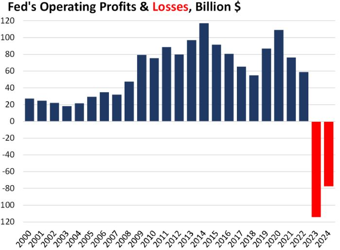
上圖顯示過去25年美聯儲的年度營業盈虧。請注意，這只是按照簡單會計規則所做的統計核算結果，卻已經可以看出美聯儲在總計交付財政部一萬多億美元的盈餘之後，在兩年前因開始縮表而轉爲虧損。目前美聯儲已將原本手持的金融資產從峰值9萬億降至7萬億，如果忽略Trade Impact交易響應效應，假設剩餘的7萬億債券可以全部以當前的市場價格脫手，那麽可以算出會另加1萬億出頭的虧損，這部分叫做“Unrealized losses”“未實現虧損”。換句話説，從25年前開始濶表至今，似乎整體不賺不賠。但脫手巨量金融資產，必然會引發非綫性的價格崩潰，即便忽略恐慌、只以簡單的綫性效應來估算，理論上（這裏忽略了美聯儲的主任務：阻止金融危機，以及通脹效應等等現實考慮）也至少損失一小半，所以美聯儲25年騷操作的净虧損可能高達2-3萬億美元，這已經嚴重違反了上個段落所述的“小賺”脚本，從而可以倒推美聯儲參與了許多價值毀滅事件。這些價值毀滅並不難確認，它們正是AIG、GE Capital、Freddie Mac、Fannie May等等監管不力案例的總和，讀者可以對比近年中國的恆大等等房地產商。
雖然上面的描述已經十分慘淡，美聯儲賬目的真實展望其實更加糟糕，畢竟沒人相信美聯儲有任何機會將那7萬億資產清零；而不認賠殺出的後果，就只能等最終的金融危機中，徹底喪失美元的霸權地位（除非人民銀行要一再割肉喂鷹，拿中國全體人民的血汗錢來為美國多年的浪費和罪行兜底），其後美國的債務負擔只能依靠貶值通脹來解決，那麽美聯儲的净虧損（依實質購買力計算）將會是7萬億美元的大半，約相當於當前美國聯邦財政赤字的4倍；如果將其算入國債，則佔GDP比率將從121%增至145%，一舉超越意大利，成爲工業國家中僅次於日本和希臘的世界第三。可笑的是，美元末日已經迫在眉睫，中國金融管理層卻仍然在小心翼翼地維護其57%的國際儲備貨幣份額，致使當美國金融崩盤之時，國際資金將因而損失57%以上的實際價值（考慮歐英日在殖民體系中的附庸地位，實際比例應是美元、歐元、英鎊、日元之和，亦即超過85%），包括中國的外匯儲蓄在内；一般的漢奸賣國哪能有這麽大的危害？
【後註十，2025/03/29】美國依賴歐盟和中國的犧牲，灌輸資源先給貨幣、後及財政而成功渡過2021/2022通脹危機之後，因爲跳過經濟周期中清除泡沫的階段，下一場金融危機必然更加全面（也就是Everything Bubble樣樣泡沫）、也更加基本（亦即上次的靠山-貨幣和財政-要麽再次成功擋下雪崩、要麽成爲問題的核心；差別要看中國金融主管、尤其在任人民銀行行長是否具有與前任相同級別的漢奸本性）。【後註九】討論美聯儲賬目所隱藏的虧損時，已經提到它雖然加劇危局，但依舊從屬於赤字和國債，所以要估算新危機的時段（博客已經反復解釋過，這類危機的爆發，是一種Poisson process中譯為泊松過程或卜瓦松過程：即便完全定性定量地瞭解其特質，仍然會有遺存的隨機不確定性體現在確實發生的時間點上，也就是這些估算必有很大的不可約誤差），必須仔細研讀赤字的走向。
除了正文中列出的赤字絕對值演化曲綫之外，另一個值得關注的指標是國債利息支出佔聯邦預算的比例，下圖（來自《Sympathy for the sovereign credit analyst》）顯示美國主流估算的演進過程：藍綫是歷史數據，淡藍綫是Moodys的2025年預期，其它的都是CBO國會預算辦公室每個年度所做的估算，大部分顯示為灰綫，但粉紅綫來自2011年，紫綫則是2025年最新。可以簡單看出，雖然對短期未來的預估有高有低，對長遠未來CBO始終展示了明顯的低估傾向，即便是最悲觀的官方曲綫（亦即右側最高的那條灰綫，對應著2021年CBO的展望）也遠低於私營信貸評級所估的淡藍綫。但我必須提醒讀者，就連Moodys的那條淡藍綫，雖然相對客觀，但還是基於不會有系統性危機的隱性假設；換句話說，那其實是美國所能企望的最佳脚本，是客觀預估下不可約誤差區間的下限（亦即不能天真地與CBO對比，然後誤以爲是誤差上限）。因而反殖民力量應該努力的方向，正是避免再次為系統性危機擋刀；這裏的重點，當然如同博客十幾年來反復强調的，是及早替代美元做爲國際儲備貨幣的份額。若是再度無視有識者的呼籲，十年只壓低4%（2015年61% -> 2025年57%），以致美國殖民吸血體系得以延續，那將是全體中國人民和整個第三世界的大不幸。
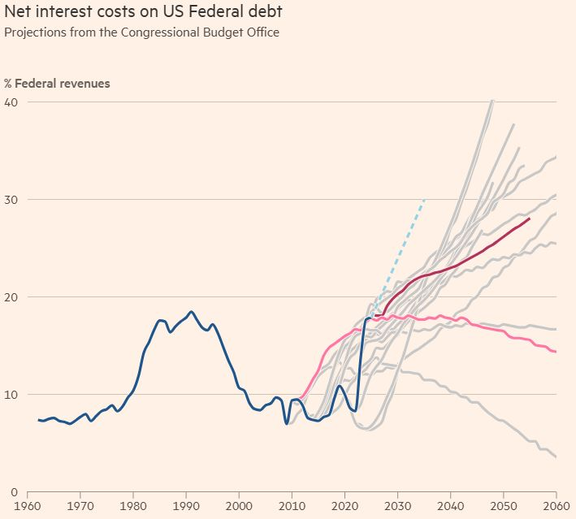